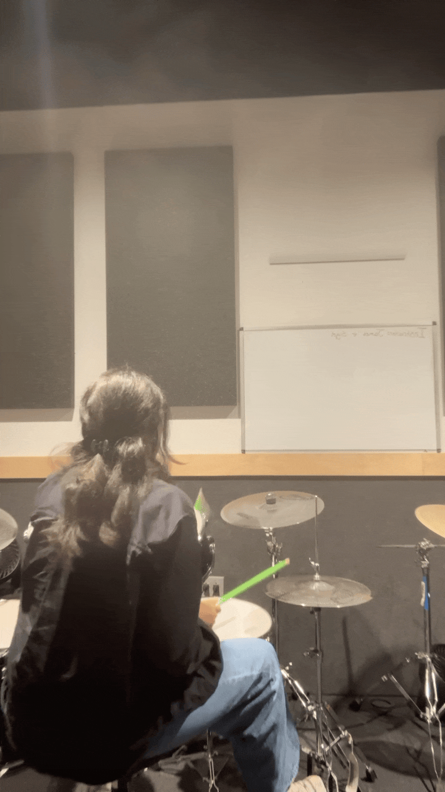
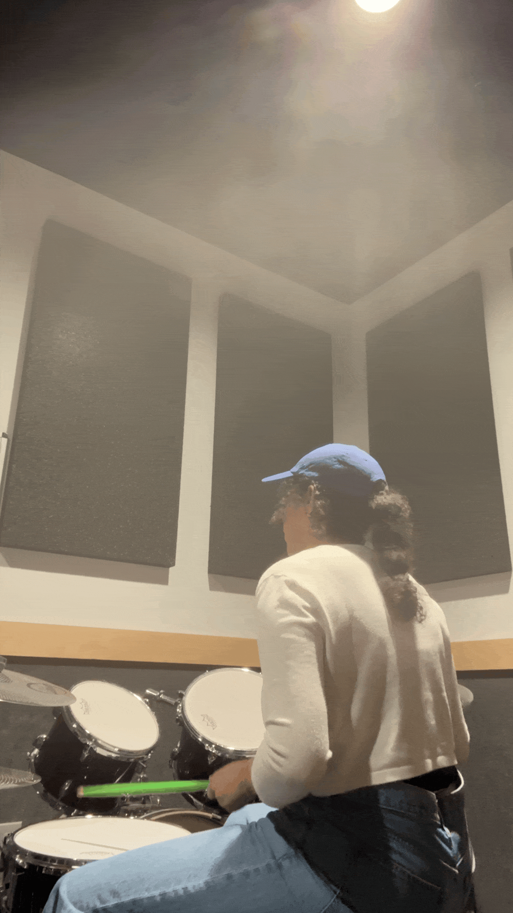
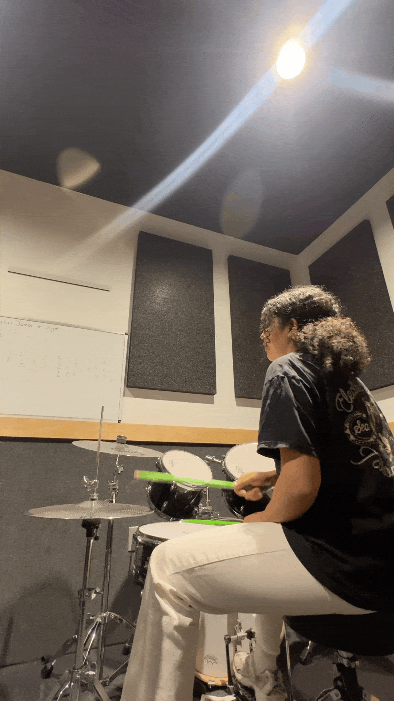
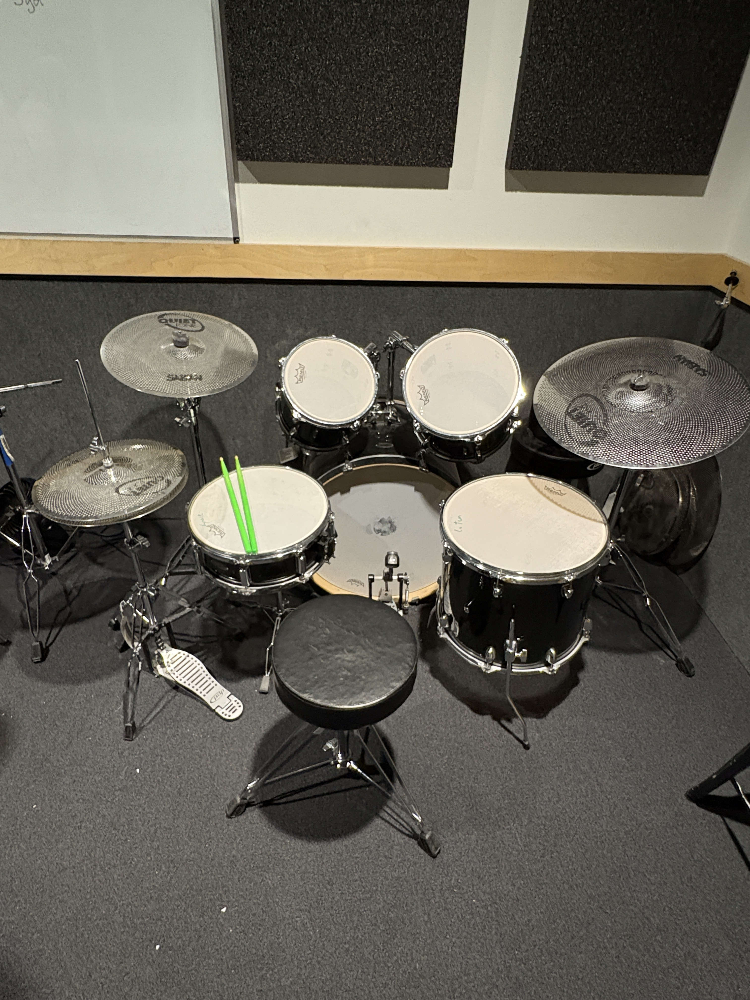
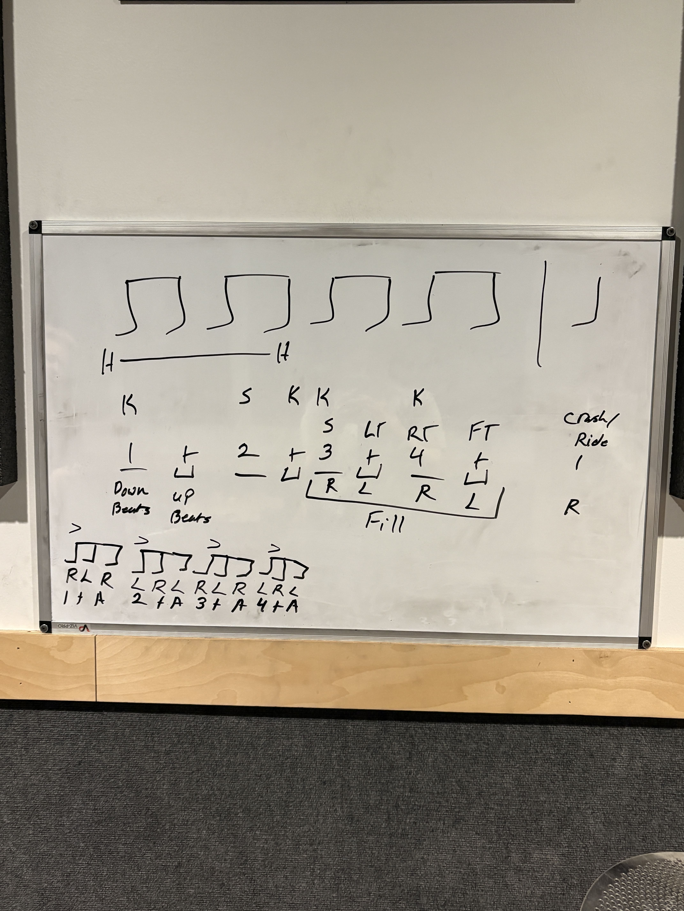

2025 · designed in figma and built in code in seattle . ݁₊ ⊹ .
conversation is my favorite medium
From January to August 2025, I decided to learn the drums as an intentional exploration into a purely physical system. Intrigued by the rhythmic complexity since middle school, taking on lessons as an adult taught me the value of slowing down to build mastery. It required me to break down complex polyrhythms (multiple, simultaneous patterns) into simple, foundational components before reassembling them into a cohesive whole.





Africa by Toto
Baybee and The Bus Song by Jay Som
Dreams and Silver Springs by Fleetwood Mac
From the Start, Tough Luck and Silver Lining (a personal favorite to play) by Laufey
Show Me How by Men I Trust
Steeeam by Shelly
(They Long to Be) Close to you by Carpenters
2025 · designed in figma and built in code in seattle . ݁₊ ⊹ .
conversation is my favorite medium